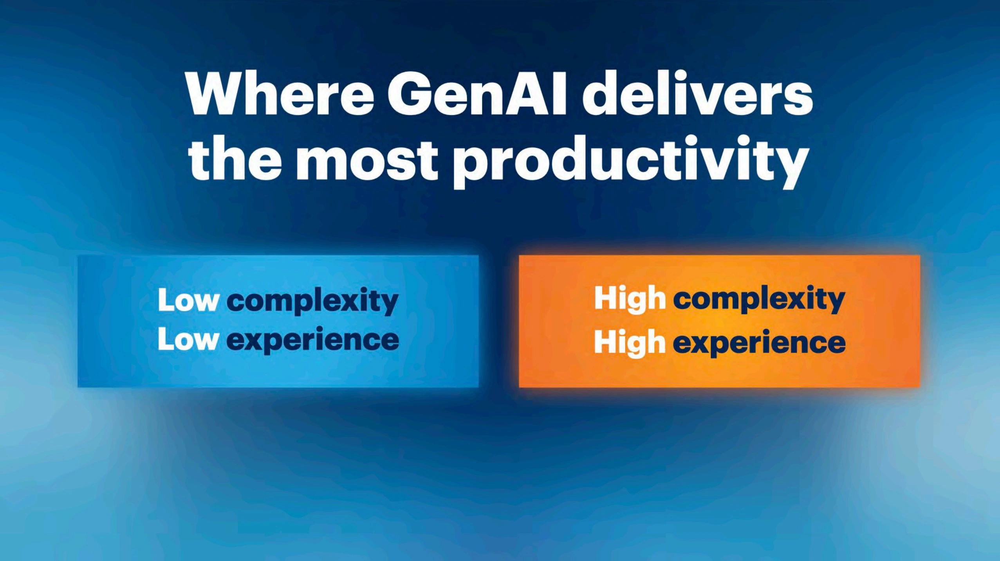
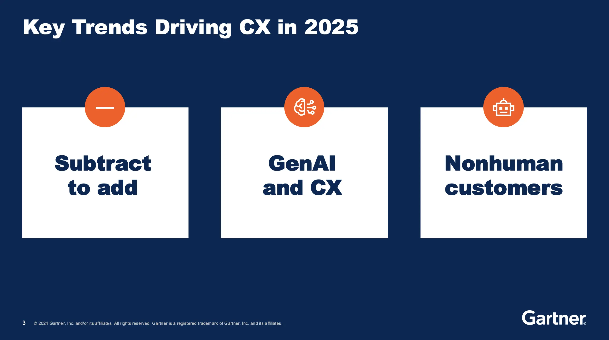
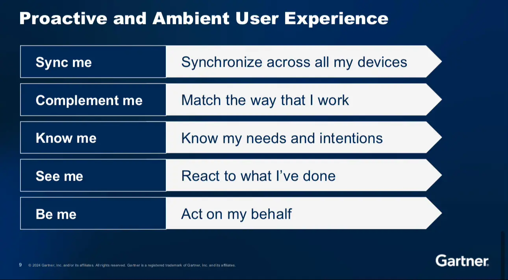
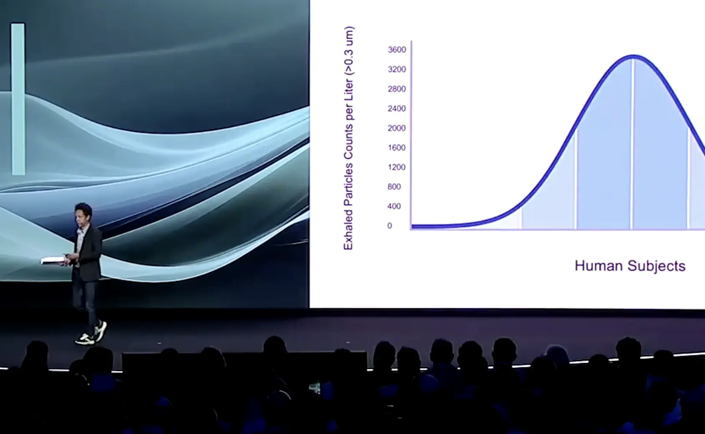

Today was all about diving into the opportunities AI presents, both for customer experiences and internal applications. I attended five talks, but let’s be real, one didn’t quite land for me. Still, the overall message from the day was crystal clear: AI is transforming how we work, think, and build—if we embrace it.
Talks I attended:
- Pacing Yourself in the AI Races – Hung LeHong & Mary Mesaglio
- Top Strategic Technology Trends for 2025 – Gene Alvarez
- Key Trends Driving Customer Experience in 2025 – Michael Chiu
- Future of Enterprise Applications – Anne Thomas
- Revenge of the Tipping Point – Malcolm Gladwell
There’s so much potential for AI to not just enhance productivity but truly change how we work and engage with technology. I’m energized to encourage others to experiment more with AI and find ways to integrate it into future applications. AI isn’t just for the tech-savvy—it’s for all of us. Leaders have a real responsibility to set the tone and encourage healthy AI adoption across our teams. Here’s my recap:
Pacing Yourself in the AI Races
By Hung LeHong & Mary Mesaglio

This keynote introduced two critical AI races: the fast-paced race of technology vendors and the steadier race for organizations to successfully scale AI. Leaders must choose their pace and find the right balance to leverage AI effectively.
Key Takeaways:
- Two AI Races: Organizations need to decide whether to rush AI implementation or adopt a more thoughtful approach that aligns with their goals.
- Sweet Spot for AI Productivity: AI shines brightest in complex roles with experienced employees—finding that “deep productivity zone” is key.
- Managing AI Costs: It’s crucial to monitor Gen AI costs, especially during early proof-of-concept stages, to prevent spiraling expenses.
Key Trends Driving Customer Experience in 2025
By Michael Chiu

Chiu’s focus was on simplifying customer experiences. His comparison of Apple’s one-button iPhone to the complexity of a Blackberry illustrated how subtraction can often lead to better design and usability.
Key Takeaways:
- Simplicity is Key: Reducing features often leads to more intuitive, user-friendly experiences.
- Subtract to Improve: Sometimes improving UX means taking away complexity, not adding to it.
- Paradox of Choice: Simplifying choices can lead to better customer engagement and decision-making.
Further Reading:
Future of Enterprise Applications
By Anne Thomas

Anne Thomas discussed the evolution of enterprise systems, where AI takes over mundane, repetitive tasks, allowing humans to focus on strategic, high-value work. She outlined five design principles for building intelligent applications, making the future of work feel both inspiring and actionable.
Key Takeaways:
- AI Shifts Work Balance: AI will handle more routine tasks, giving people the freedom to focus on creative and strategic work.
- Five Design Principles: Intelligent applications will thrive on adaptability, automation, and connected data, leading to smarter systems that anticipate user needs.
Revenge of the Tipping Point
By Malcolm Gladwell

Malcolm Gladwell’s talk took a fascinating turn by highlighting the power of outliers. His message was simple: the things that disproportionately affect outcomes are often found at the extremes, not the averages.
Key Takeaways:
- Outliers Matter: Rare events or individuals often have a much bigger impact than we assume.
- Radical Distributions: Many societal and business problems don’t follow the bell curve but are driven by a small percentage of extreme cases.
Final Reflections

Day 1 offered a wealth of insights into how AI is shaping the future of work and technology. It’s not just about embracing AI, but about strategically applying it to areas where it can deliver the greatest impact. As we look to the future, AI will continue to redefine productivity and experience in ways that demand both creativity and foresight.